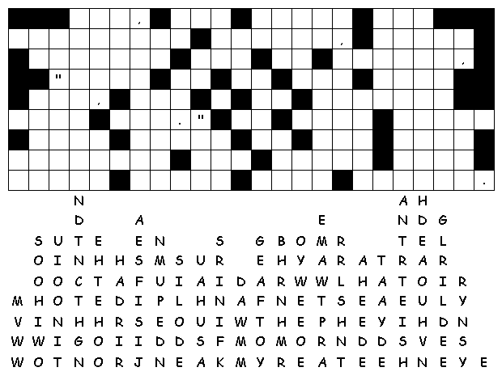

This
week's lessons:Exodus
24:12-18, Psalm
2 or Psalm
99, 2
Peter 1:16-21, Matthew
17:1-9
Elementary School Pew-work
W H I L E F R O M P S S
|
(Matthew 17:5) While he was still speaking, suddenly a bright cloud overshadowed them, and from the cloud a voice said, "This is my Son, the Beloved; with him I am well pleased; listen to him!" (NRSV) |
Word List |
from http://www.efree.mb.ca/lectionarypuzzles free to distribute for free with this notice. Words are in a straight line left to right or top to bottom |
||
1.
Who went up on the mountain with
Jesus?
_____________________________________________________________
2.
Who appeared with Jesus on the
mountaintop?
_____________________________________________________________
3.
What did the disciples
offer to
do?
_____________________________________________________________
4.
What did the voice
say from the
sky?
_____________________________________________________________
5.
When did we hear the voice speak
before?
_____________________________________________________________
Questions taken from Sunday School Lessons; http://www.sundayschoollessons.com/trans.htm
